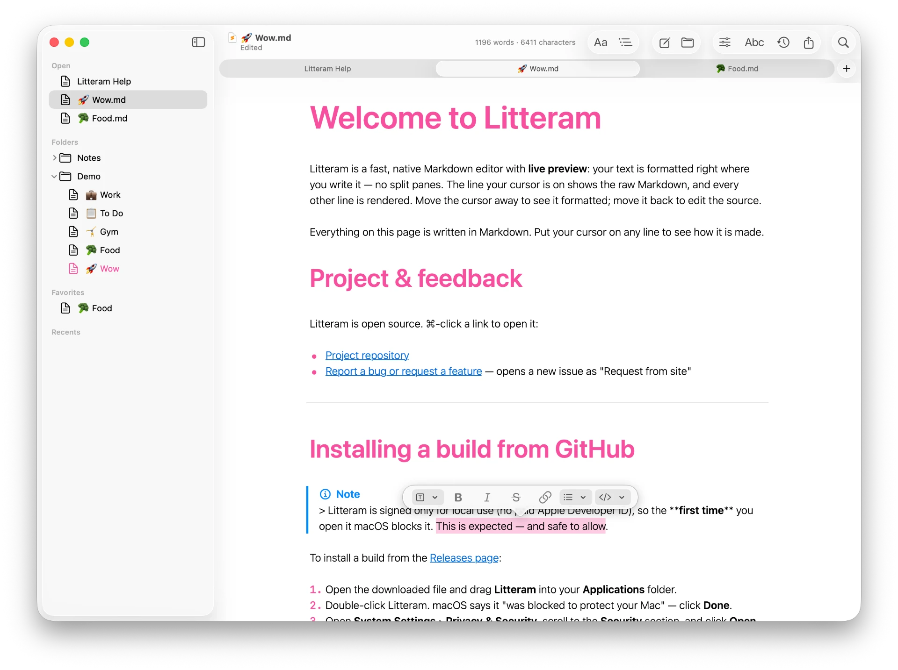
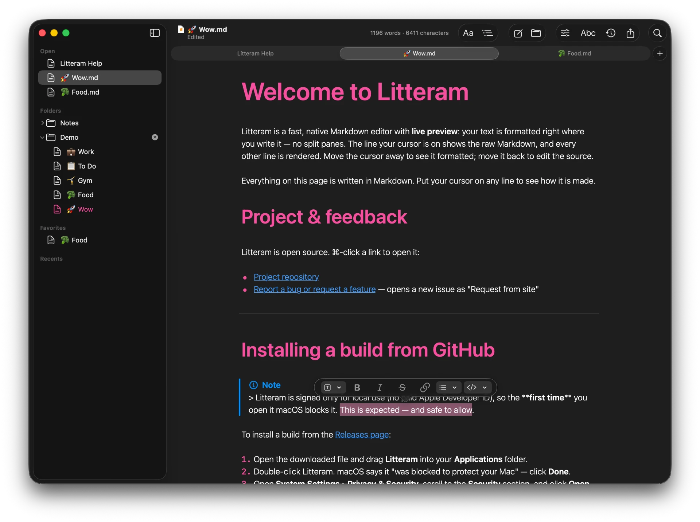

Litteram
Litteram
The simple, native Markdown editor for Mac.
Litteram is a native Markdown editor for macOS that lets you write directly in real .md files. It combines live formatting, cursor-aware editing, native document tabs, PDF export, and a distraction-free interface, without accounts, cloud storage, tracking, or subscriptions.


Start writing.
Litteram is free and open source, released under GPLv3. Download the latest build or clone the repo and run it in Xcode.
Download for macOSRequires macOS 13 or later